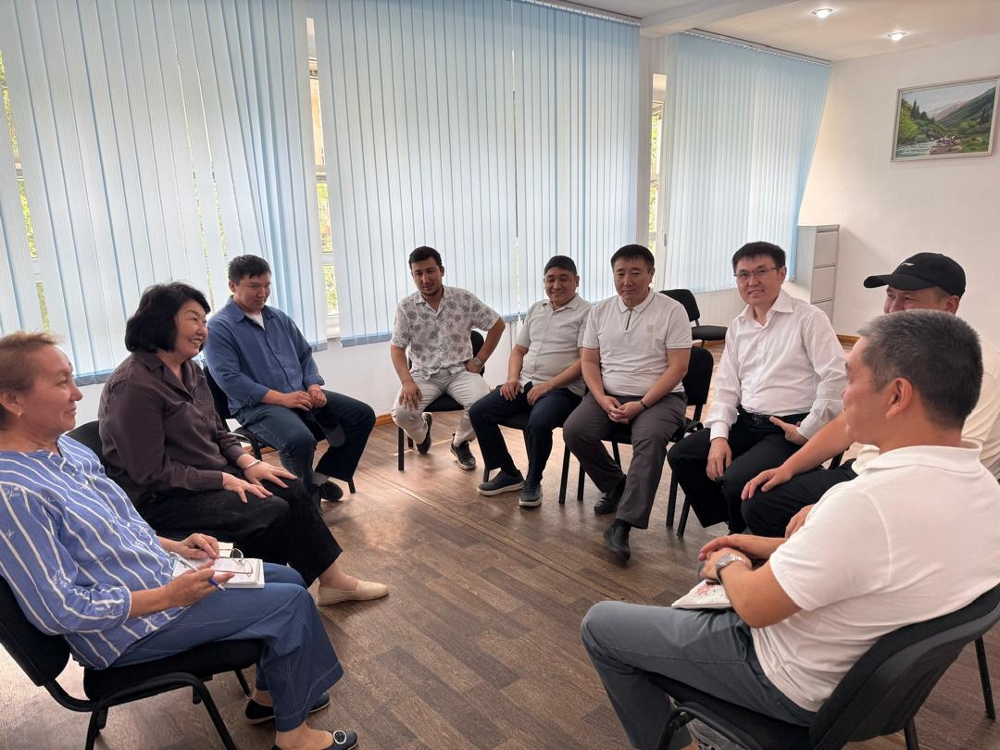
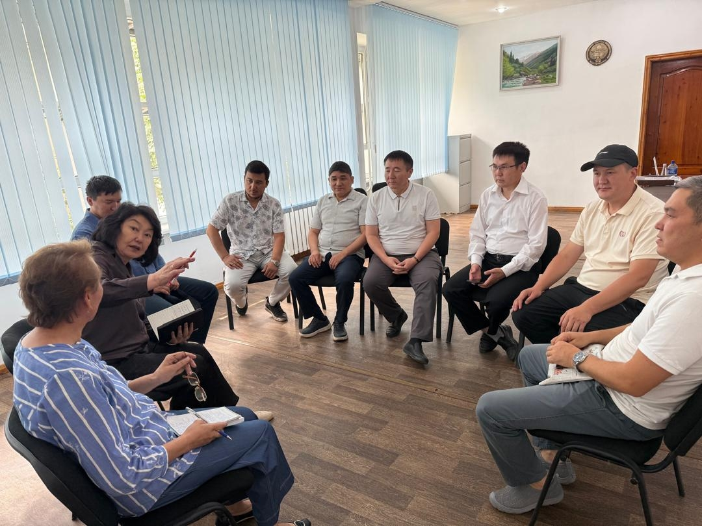
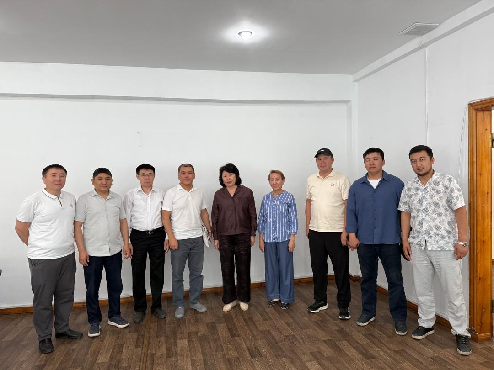

Директор Государственной книжной палаты Кыргызской Республики, профессор Жылдыз Бакашова провела рабочую встречу с руководителями ведущих издательских домов страны. На встрече приняли участие директора издательских домов: “Дарак” - С.Идирисов, “Китепстан” - Б.Абдуллаев, “Мурас” - Н.Мурзаев, “Шам” - К.Сатыкулов, “Кадам” - З.Таштемиров, “Таалим” - К.Акматов и др.
Основной целью встречи стало обсуждение вопросов развития издательской отрасли, укрепления взаимодействия между Государственной книжной палатой и издательским сообществом, совершенствования системы государственного библиографического учета, а также реализации современных цифровых решений в сфере книгоиздания.
Открывая встречу, директор Государственной книжной палаты Кыргызской Республики Жылдыз Бакашова ознакомила участников с приоритетными направлениями деятельности учреждения, рассказала о проводимой работе по регистрации печатной продукции, присвоению международных стандартных номеров ISBN, ISSN и ISMN, учету обязательных экземпляров документов и формированию Национального архивного фонда печати Кыргызской Республики.
Особое внимание было уделено вопросам цифровизации отрасли. Участники обсудили внедрение электронного взаимодействия между издательствами и Государственной книжной палатой, развитие электронных сервисов, создание Национального электронного архива печати Кыргызской Республики, а также порядок предоставления электронных версий изданий в целях их долгосрочного сохранения и государственного библиографического учета.
В ходе встречи состоялся конструктивный обмен мнениями по актуальным вопросам издательской деятельности, развитию книжного рынка, поддержке отечественного книгоиздания, соблюдению законодательства в сфере издательского дела и авторского права, а также сохранению национального документального наследия.
Руководители издательств выразили заинтересованность в дальнейшем сотрудничестве и поддержали инициативы, направленные на модернизацию отрасли, повышение качества издательской продукции и развитие цифровой инфраструктуры книжной сферы.
По итогам встречи стороны договорились продолжить совместную работу по совершенствованию механизмов взаимодействия, внедрению современных технологий и реализации проектов, способствующих развитию книжной культуры и сохранению интеллектуального наследия Кыргызской Республики.
Государственная книжная палата Кыргызской Республики продолжит системную работу по развитию национального книгоиздания, сохранению печатного наследия страны и внедрению современных цифровых технологий в деятельность отрасли.


